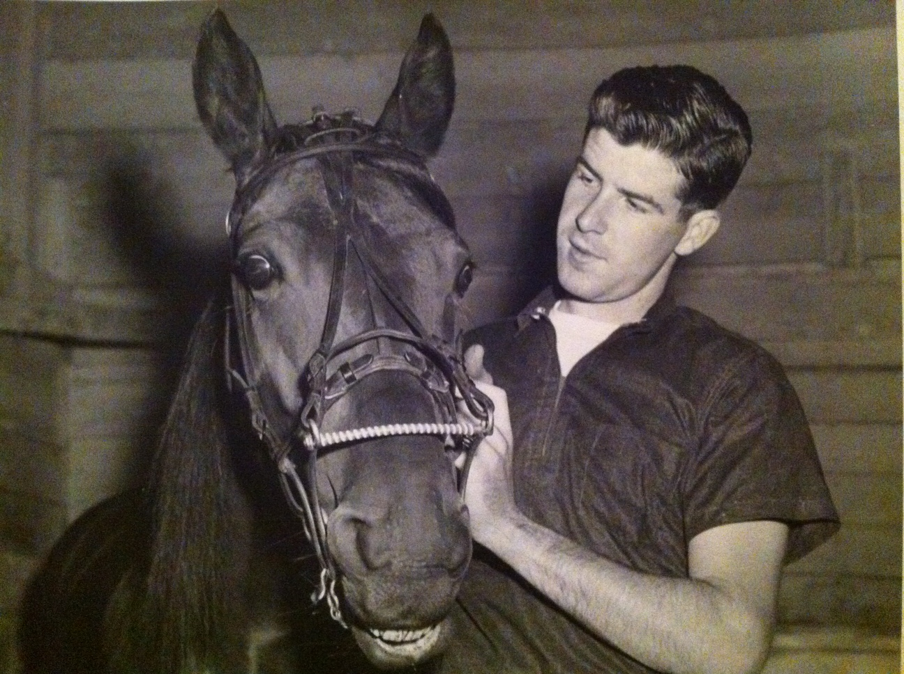

The Ohio Valley Stables was originally started in the 1940s as a partnership with Howard Beissinger and the King brothers, all of Hamilton, Ohio. The partnership was dissolved in 1956 and Charley retained the name of the Ohio Valley Stables and several horses, among them Ladies First.
Ladies First became Charley's first great success in the horse business when she equaled the world record for four-year-old trotting mares. She would go on to become one of the top earning mares of the 1950s, and her influence on the stable would last for decades — her foal, Argo Time, would still be racing in 1971.
Charley retired Ladies First at the peak of her career. She lived out her days at the Sharon Farm Stables in Crawfordville, Georgia, alongside her great stablemate Irvin Paul — and Charley loved them both to the end.

Charley with Ladies First

Modern AI Portrait of Ladies First

Ladies First

Charley purchased Annette Sue for $20,000 and by 1958, his small stable boasted two of the world's top free-for-all trotters. Annette Sue won a record-setting 16 straight races and, like her stablemate Ladies First, was one of the top earning trotters of her day.
Annette Sue and Ladies First won a combined total lifetime earnings of over $300,000. In today's money, that amount is over 2 million dollars.

Annette Sue

Charley King with Annette Sue · 1958
Argo Volo was a half-brother to Ladies First and, though he was never as great a racehorse as she was, he turned out to be a pretty good actor. Charley is remembered telling the story of how Argo Volo was used as a stunt double for Whirling Jet in the filming of the I Love Lucy episode "Lucy Wins a Race Horse."
Long wires running back to someone standing in a film car were used to drive Argo Volo in the race track stunt scenes. The episode was filmed at Roosevelt Raceway in 1958 and is one of the most hilarious episodes of I Love Lucy — it has since been removed from YouTube due to copyright. Note that Argo Volo was not the horse used in the stairway scenes inside the house, but was used in the race track stunt scenes at Roosevelt.

Argo Volo
Mr. Budlong was the first horse that Charley purchased in partnership with Abe Wilsker in 1959. Charley won 21 out of 35 races and earned over $80,000 with Mr. Budlong. The two partners sold him for $47,000 in 1960 — and used the proceeds to purchase Irvin Paul for $35,000, a transaction that would change the stable's history forever.

Mr. Budlong
The mighty Irvin Paul was Charley's greatest success in the horse business. Irvin Paul won several of the big international paces held at Yonkers and Roosevelt Raceway in the early 1960s, and won several of the American Classics held at Santa Anita and Hollywood Park.
Irvin Paul held three world records at one time and had $548,000 in lifetime earnings. He was the seventh harness horse in history to surpass the half-million dollar mark and was, at one time, the sixth top money-winning standardbred in the world. In 1962 Irvin Paul was voted runner-up for Standardbred of the Year.
He set the world record for a mile and a quarter in September of 1962 at Roosevelt Raceway — and held it for 14 years, until it was surpassed by Ramblin' Willie in 1976.
Irvin Paul was known to be quite a character. His caretaker, Carter Campbell, even trained him to smile for the camera.

Irvin Paul

Charley King and Irvin Paul · Santa Anita, 1962

Irvin Paul trained to smile for the camera by caretaker Carter Campbell · 1962


Ohio Valley Stables racing colors
Ordeal was one of several New Zealand horses that Charley trained. The Ohio Valley Stables received the top three honors of the 1963 Santa Anita Meeting when Ordeal was voted Trotter of the Year and her stablemate, Irvin Paul, was voted Pacer of the Year. Irvin Paul also received the honor of Santa Anita's Standardbred of the Year — making it a dominant sweep for the stable.

Ordeal · 1963 Santa Anita Trotter of the Year
Argo Kid was the foal of Lady's One, who was a full sister to Ladies First. The trotter won almost $150,000 before his untimely death. In the season he died, Argo Kid won almost $100,000 with 9 wins from 15 races.
Charley was so impressed with this horse that he always claimed Argo Kid had the potential to be one of the best trotters in the world. Sadly, Argo Kid died of a twisted intestine at the age of four — one of the most heartbreaking losses of Charley's career.

Charley King with Argo Kid · 1965

Adios Marches was a top free-for-all pacer of the mid-1960s with almost $200,000 in lifetime earnings. He butted heads with the likes of Bret Hanover and Cardigan Bay — the biggest names in harness racing at the time — and was most notably a competitor in the famed 1966 Pace of the Century at Yonkers Raceway.

Charley King and Adios Marches · 1966


{kind=link}